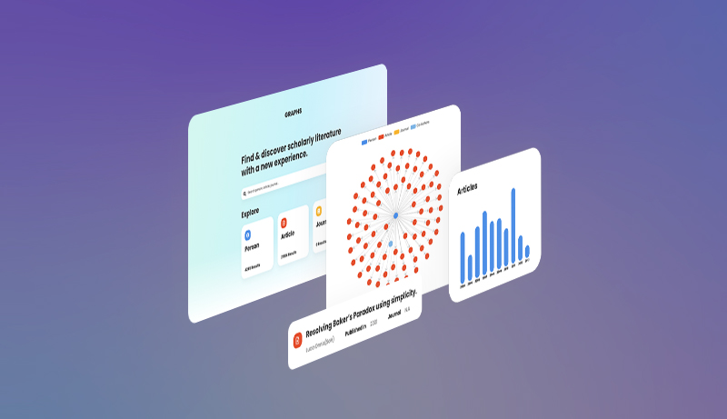
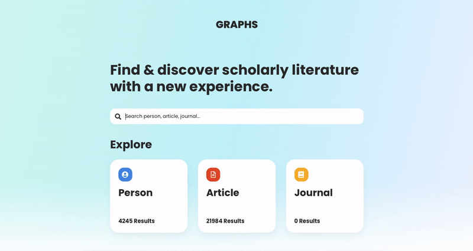
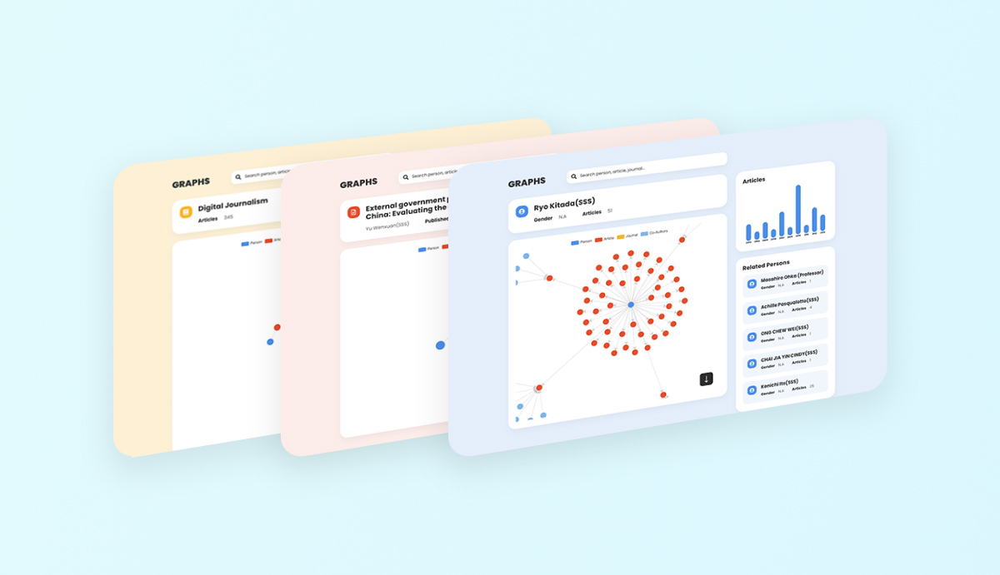
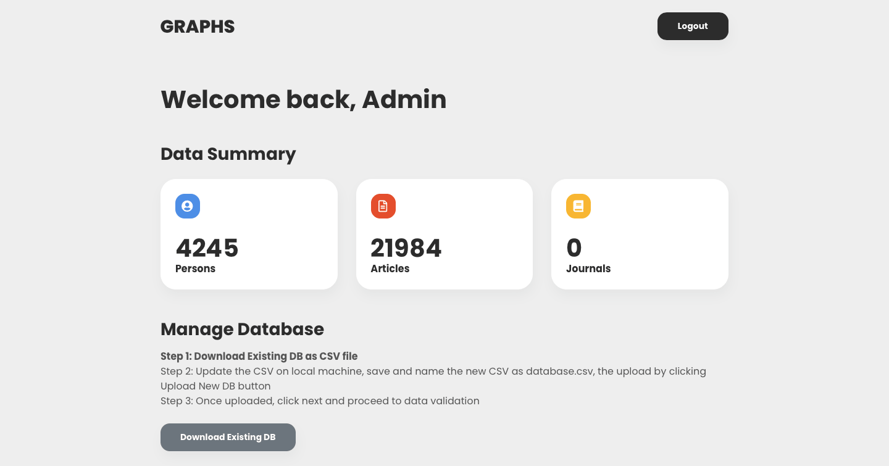
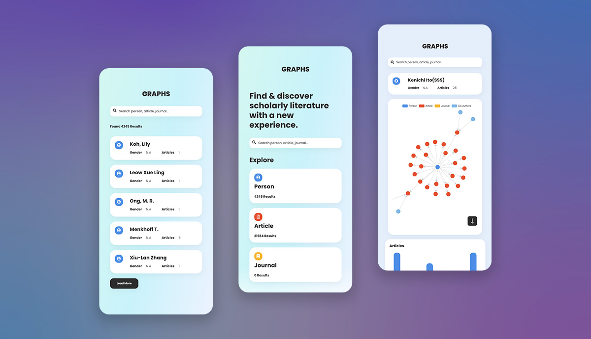

Graphs.be
Introduction
Graphs.be is a search and visualisation tool on a bibliographic database. This project intends to bring an enriched data search and analytics experience with the graph visualisation.
Objective
The interface design must stand out to highlight the difference from traditional search engines. Meanwhile, the interface should be easy to learn and memorise, users should be able to carry out search tasks or access to the desired information efficiently.
Approach
It was decided to apply minimalist design and dashboard style search result page, so that users will be able to focus on available task options with appropriate visibility and constraints together with the new search experience. Consistent design style is applied across all the pages for users to identify functional blocks and call to actions.
Colour Palette
The three node/data types (person, article and journal) are coloured coded accordingly, the defined colour mapping aims to levitate learnability and memorability of the application.
Text
#2C2C2C
Person
#4C8EE6
Article
#E44E2B
Journal
#F8B529
The Design
Search Suggestion
Guide users to the desired data category with the given search query.
Colour-coded Dashboard
Search result dashboards are colour-coded to maintain consistency and harmony.
Admin Dashboard
System administers are able to update the database with guided steps.
Responsive Design
It is important to get rid of the clutter on mobile, even for dashboards.
